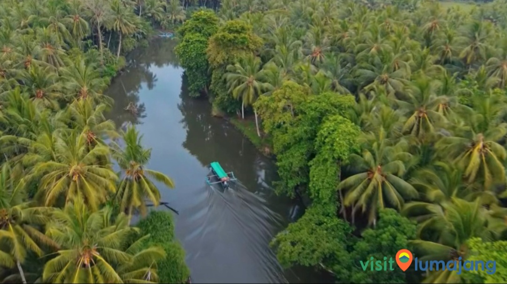
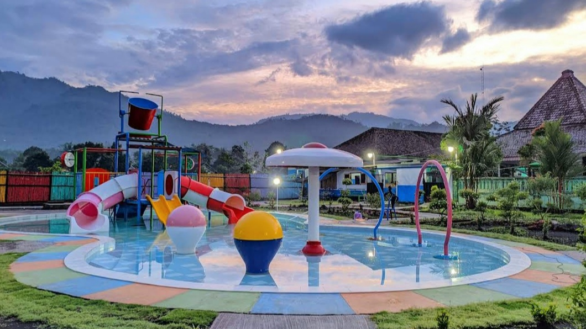
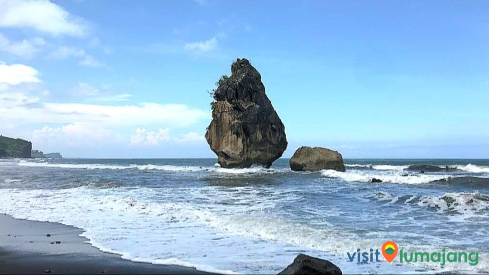
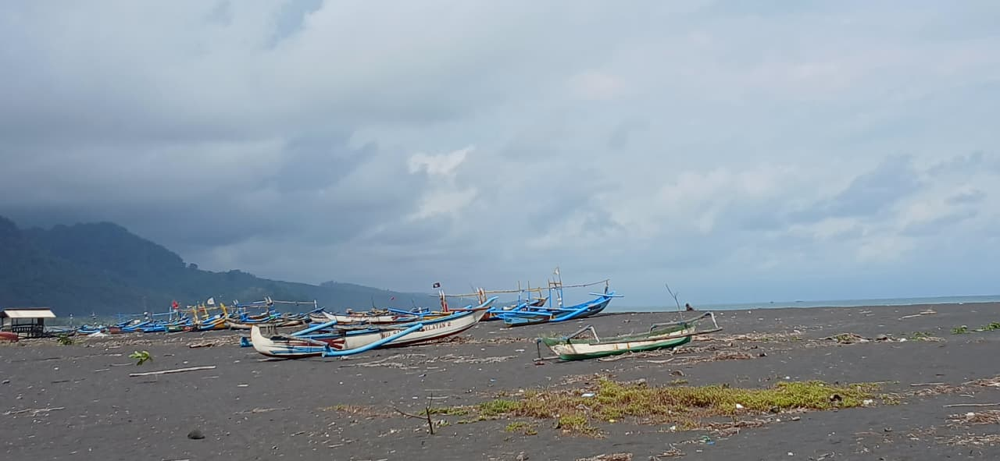
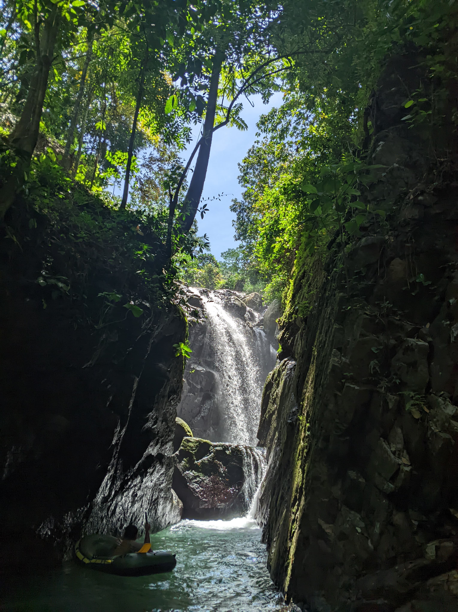
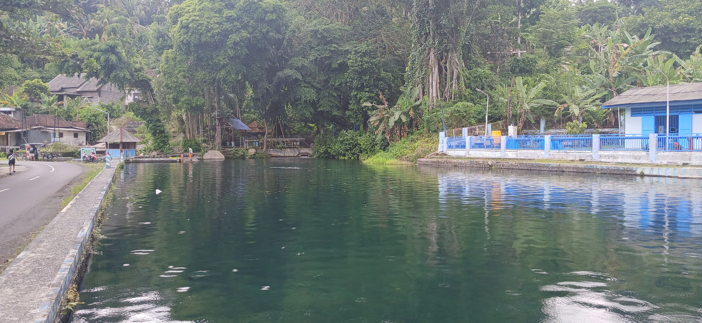
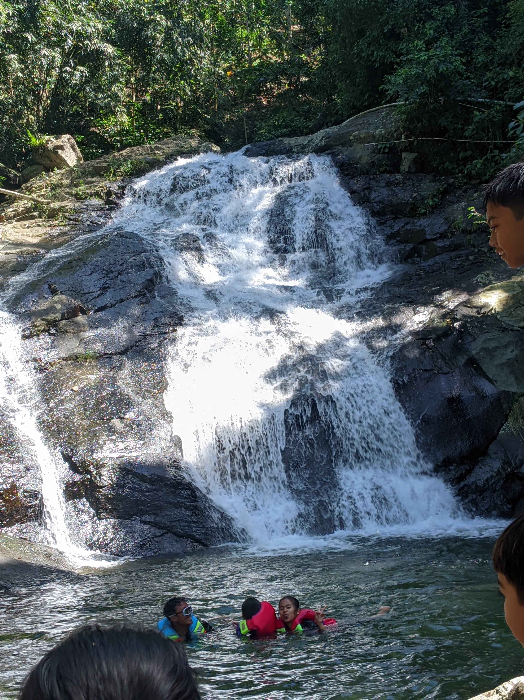

Selamat Datang di Tempursari
Kecamatan Tempursari, Kabupaten Lumajang, menyimpan banyak potensi wisata yang bisa menjadi pilihan liburan. Mulai dari pantai, air terjun, sendang, hingga puncak perbukitan bisa dinikmati di sejumlah desa yang berada di wilayah selatan Lumajang tersebut. Jika kalian ingin menikmati wisata di Kecamatan Tempursari Lumajang, bisa simak daftarnya disini.
Destinasi Unggulan Kami

Amazon Tempursari
Nikmati susur sungai yang dijuluki 'Amazon dari Timur Jawa'. Dikelilingi rimbunnya pohon kelapa, pemandangan hijau dan air yang tenang akan memanjakan mata.

Waterpark Pundung Sari
Tujuan liburan keluarga yang sempurna! Waterpark Pundung Sari menawarkan berbagai wahana air seru, kolam renang, dan seluncuran untuk anak-anak maupun dewasa.

Pantai Watu Ghodek
Pantai eksotis dengan pasir hitam dan ikon batu karang besar yang menjulang di lepas pantai. Tempat ideal untuk menikmati deburan ombak dan pemandangan laut selatan.

Pantai Bulu
Saksikan kehidupan nelayan setempat di Pantai Bulu. Dengan hamparan pasir hitam yang luas dan perahu-perahu jukung, pantai ini menawarkan suasana pesisir yang otentik.

Sendang Gopit
Petualangan menanti di Sendang Gopit! Jelajahi ngarai tersembunyi untuk menemukan air terjun (coban) yang jernih dan segar, diapit oleh tebing-tebing batu yang gagah.

Pemandian Umbulsari
Segarkan diri di Pemandian Umbulsari. Tak jauh dari sini, terdapat Pemandian Umbulan, yang menyajikan kolam alami dengan air jernih bersumber langsung dari pegunungan.

Air Terjun Hidro
Terletak di Desa Kalioling. Bagi pecinta wisata air terjun, Air Terjun Hidro bisa menjadi pilihan. Suasana asri dan debit air yang deras menjadi daya tarik utama lokasi ini.